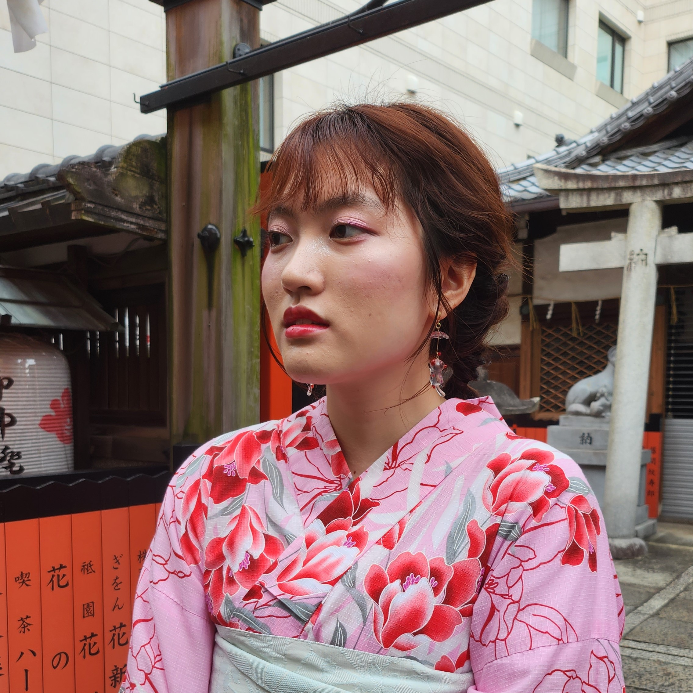

About Me
Hi, I'm Viviana! In my free time, I enjoy making playlists on Spotify, creative
writing, and drawing! I am also an independent content creator and live-stream video games. You can usually
find me at a coffee shop with my headphones in, listening to J-Pop, Taylor Swift, or Carly Rae Jepsen.
I discovered Computer Science as a freshman at Brown University, and fell in love with the discipline after
I took an introductory course in which I designed and programmed video games. Since then, I've discovered a
passion for design and hope to break into the field as a product manager or UI/UX designer.
I have always been interested in Japanese language and pop culture, and as a heritage speaker of Mandarin,
I became very interested in studying East Asian Studies. I have taken courses in East Asian language,
literature, and film, with a specific focus on Japanese culture, language, and society.